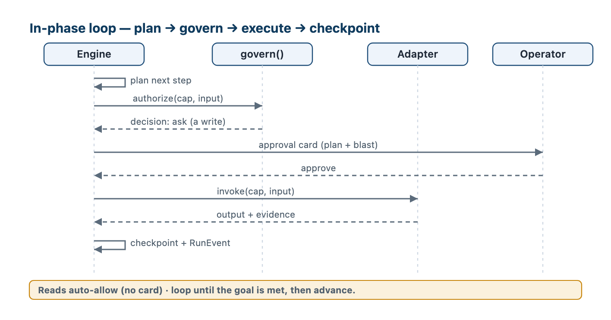
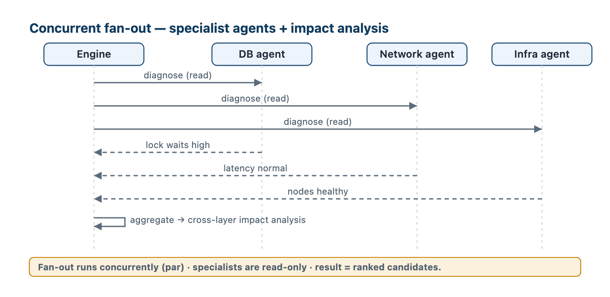
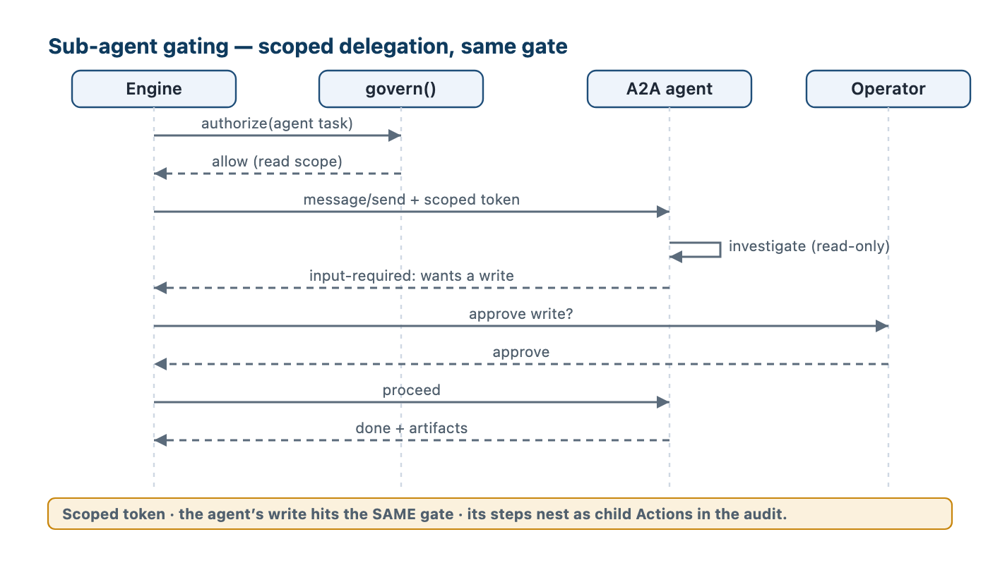

The buildable contract: interfaces, APIs, data model, tests — for the dev team.
| LLD section | Builds on (HLD) |
|---|---|
| §1 Components & interfaces | HLD §2 (components), §4.6 (engine) |
| §2 API surface | HLD §4.1 (call path), §6.3 (UI read models) |
| §3 Data-model reference | HLD §5 (data model) |
| §4 Key flows & sub-agent governance | HLD §3, §4, §5.7 (state machine) |
| §5 Test stack | HLD §7.4 (was an open item) |
| §6 Use cases & success criteria | HLD §3.6–3.11, §4.6, §6.4 |
Each component gets its responsibilities, a Python-flavored interface (the contract other components and tests code against), and its dependencies. Interfaces are framework-agnostic (HLD §1.4 "own the domain, rent the orchestrator") — LangGraph sits behind the Engine interface and stays swappable. Types referenced here (Run, Action, Checkpoint, …) are defined in §3.
Responsibilities. Own the run lifecycle: load the playbook, build the phase graph, drive the in-phase plan→execute loop, checkpoint every step, pause/resume on human signals, retry and backtrack, and bound concurrency. Durable execution (HLD §4.6).
class Engine:
def start_run(incident_id: str, playbook_ref: str, mode="live") -> RunId # mode: live | shadow
def step(run_id: RunId) -> RunState # advance until a pause or done
def resume(run_id: RunId, signal: HumanSignal) -> RunState # approval | input
def backtrack(run_id: RunId, to_phase: str) -> RunState
def cancel(run_id: RunId, reason: str) -> None
def get_state(run_id: RunId) -> RunState
Internal. A LangGraph graph — phases are nodes, the in-phase loop is a sub-graph, interrupt() fires at every gate; a Postgres checkpointer persists each super-step. backtrack(to_phase) restores that phase's checkpoint and re-opens it (any completed phase; prior evidence is retained — it is append-only). Depends on: PlaybookService, CapabilityRegistry + govern(), RunRepository, TimelineRepository.
Responsibilities. One uniform contract over the five provider kinds; resolve a capability_id to its adapter + policy; sync declared capabilities from manifests; enforce allow/ask/deny at the boundary (HLD §3.3, §4.4).
class CapabilityRegistry:
def resolve(capability_id: str) -> ResolvedCapability # provider + adapter + policy
def sync(provider_id: str) -> list[DeclaredCapability] # from the manifest
def list(filter: CapFilter) -> list[DeclaredCapability]
class Adapter(Protocol): # skill | mcp_local | mcp_remote | a2a_agent | api
def discover(self) -> list[DeclaredCapability]
def invoke(self, cap: ResolvedCapability, input: dict, ctx: RunContext) -> InvokeResult
def teardown(self, ctx: RunContext) -> None # release leases (HLD §4.5)
def govern(capability_id: str, actor: Actor, input: dict) -> Decision # allow | ask | deny
Internal. govern() reads the sticky CapabilityPolicy + the declared effect/trust and returns the decision the host enforces — the model cannot bypass it. Depends on: ProviderRepository, PolicyRepository, the per-kind adapters.
Responsibilities. Load / validate / publish / version playbooks; pin playbook@version per incident; serve parsed phases + schemas to the Engine (HLD §3.5, §5.4).
class PlaybookService:
def load(self, ref: str) -> Playbook # "id@version"
def validate(self, doc: str) -> list[ValidationError] # structural + semantic
def publish(self, doc: str, actor: Actor) -> PlaybookVersion
def pin(self, incident_id: str, ref: str) -> None
Internal. Semantic validation calls the registry (every declared capability must exist; every output names a schema). Depends on: PlaybookRepository (Postgres), CapabilityRegistry.
Responsibilities. Receive signals (webhooks), normalize, dedup/correlate to one incident, and start (or attach to) a run (HLD §4.3).
class Ingestion:
def receive(self, raw: dict, source: str) -> Signal # normalize to typed Signal
def correlate(self, signal: Signal) -> Correlation # {incident_id, created: bool}
# on a newly-created incident -> Engine.start_run(incident_id, playbook_for(domain))
Internal. Correlation keys on fingerprint + service + window; related incidents are linked, never merged. Depends on: IncidentRepository, correlation rules, Engine.
Responsibilities. The thin repository layer that hides the Postgres (control) / MongoDB (data) split (HLD §5.1) — the only code that touches a database.
class RunRepository: # Postgres (control plane) — runs, checkpoints, events
def create(self, run: Run) -> RunId
def get(self, run_id: RunId) -> Run
def update(self, run_id: RunId, **fields) -> None # status · current_phase · checkpoint_id
def list(self, incident_id=None, status=None, phase=None,
limit=50, cursor=None) -> Page[Run] # the queue + hot paths
def save_checkpoint(self, cp: Checkpoint) -> None
def latest_checkpoint(self, run_id: RunId) -> Checkpoint
def append_event(self, ev: RunEvent) -> None # append-only (no update/delete)
def events(self, run_id: RunId) -> list[RunEvent]
class EvidenceStore: # MongoDB + object store (data plane)
def put(self, ev: Evidence) -> Ref # large blobs -> object store
def get(self, ref: Ref) -> Evidence
class TimelineRepository: # MongoDB (data plane) — the human-facing projection
def project(self, ev: RunEvent) -> None # RunEvent -> timeline_event
def list(self, incident_id: str) -> list[TimelineEvent]
The split is clean: RunEvent is control-plane (Postgres), appended by RunRepository.append_event — the source of truth + recovery log; TimelineRepository projects each event to the Mongo timeline_event (the readable story the UI reads). Depends on: Postgres, MongoDB, object store.
Responsibilities. Serve the workbench's read models (queue, console, approvals, timeline, registry, dashboards) and accept its actions. Read models are projections over §3 (HLD §6.3); every write routes through the Engine + govern(), never around them.
# REST — full schemas in §2
GET /incidents -> [IncidentListItem]
GET /runs/{id}/console -> ConsoleView
POST /interactions/{id}/resolve -> {decision | response} # approve / deny / answer
POST /runs/{id}/backtrack -> {to_phase}
Depends on: read-model repositories, Engine (for actions).
Responsibilities. Register A2A agents — specialist DB/network agents, or incumbents (Amelia, BladeLogic) — from their Agent Card; invoke them as two-way tasks; govern them as scoped, least-privilege delegation (HLD §1.4, §3.10). This is the a2a_agent Adapter.
class A2AAdapter(Adapter):
def discover(self) -> list[DeclaredCapability] # from /.well-known/agent-card.json
def invoke(self, cap, input, ctx) -> InvokeResult
# message/send -> task; stream updates. Two pauses both return blocked:
# input-required -> InvokeResult(status=blocked, interaction_id) # asks a human
# agent wants a write -> InvokeResult(status=blocked, interaction_id) # govern() gates it
def resume(self, task_id, signal: HumanSignal) -> InvokeResult # message/send the decision; agent continues
Delegation rule (flow in §4.3). The agent gets only a scoped token for the granted capability, and it cannot bypass the gate: when it wants a write, invoke() returns blocked + interaction_id, the engine runs govern() (the same gate, opening a HumanInteraction), and on approval the adapter resume()s the task. The agent's action is recorded as a child Action under the parent run; authority narrows, never widens.
govern() boundary.The types the interfaces above pass around (the rest are the §3 entities):
Actor { user, ad_groups[] } # from SSO / OIDC (HLD §4.4)
Decision allow | ask | deny # what govern() returns
RunContext { run_id, phase_id, actor, mode } # mode: live | shadow
HumanSignal { interaction_id, decision?, response? } # resumes a parked run
RunState { run_id, status, current_phase, pending_interaction_id?, checkpoint_id }
InvokeResult { status: done|failed|blocked, output?, evidence_refs[],
interaction_id?, error?{ code, message } }
Lease { resource, kind, expires_at } # a held tool resource (HLD §4.5)
Phase { id, name, goal, capabilities[], output, min_confidence?,
gate_writes?, on_failure?, retry?, error_handler?, advance_when? } # parsed from playbook.phases
Playbook { id, version, phases[], schemas, defaults, unknown_access? } # unknown_access: deny|ask|allow
The govern() decision — one rule. For each capability call it resolves an effect and an access, then enforces:
| Resolve | Rule |
|---|---|
| effect | policy.effect ?? declared.effect_hint ?? unknown |
| access | policy.access → else playbook.unknown_access (when effect = unknown) → else DEFAULT[ provider.trusted ][ effect ] (§3.1 / HLD §5.3) |
| enforce | deny → refuse · ask → open a HumanInteraction(approval), return blocked · allow → proceed. And the actor's ad_groups must include the capability's domain, else deny. |
So reads on trusted providers auto-allow; writes (and unknown) raise the gate. advance_when is a boolean over the phase's output fields (e.g. confidence >= min_confidence). mode = shadow tells adapters to simulate writes (reads stay real), so a playbook is dry-run without touching prod (§5.2) — the gate still computes and logs its decision, proving it would fire.
Three external APIs (ingestion · operator · admin) + one internal contract (capability invocation) — detailed enough to generate an OpenAPI spec.
/api/v1/…. Errors: one envelope { error: { code, message, details? } } with the standard HTTP status.INC-… · run_… · act_…); timestamps ISO-8601 UTC.| Method · path | Body → returns | Notes |
|---|---|---|
POST /api/v1/ingest | RawSignal → { incident_id, run_id?, created } | webhook from AppD / Splunk / Prometheus / PagerDuty; normalizes + correlates (§1.4); read-only, un-gated (HLD §4.3) |
RawSignal { source: str, service: str, severity_hint?: str,
fingerprint: str, payload: object, at: iso8601 }
| Method · path | Returns / body | View model |
|---|---|---|
GET /api/v1/incidents | filter/sort → [IncidentListItem] | the queue |
GET /api/v1/runs/{id}/console | ConsoleView | the triage console |
GET /api/v1/runs/{id}/timeline | [TimelineItem] | audit / replay |
GET /api/v1/approvals | [ApprovalCard] | the approvals inbox |
POST /api/v1/interactions/{id}/resolve | { decision: approve|deny|refine, response? } → RunState | resolves a HumanInteraction; refine edits the action input and re-gates; routes through the Engine + gate |
POST /api/v1/runs/{id}/backtrack | { to_phase } → RunState | re-enter an earlier phase (HLD §5.7) |
POST /api/v1/runs/{id}/consult | { ask: str, assignee: user|ad_group } → RunState | opens a HumanInteraction(input) for another human; the run parks waiting_input (§4.4) |
| Method · path | Body → returns | Notes |
|---|---|---|
GET /api/v1/capabilities | → [RegistryRow] | declared vs granted |
PUT /api/v1/capabilities/{id}/policy | { access: allow|ask|deny, ad_group } | set policy; admin AD-group only; audited |
POST /api/v1/providers/{id}/sync | → [DeclaredCapability] | re-sync the manifest |
POST /api/v1/playbooks | { doc } → { version } | { errors[] } | validate + publish (§1.3) |
The engine is kind-blind (HLD §3.3): it always calls one function; the registry resolves the provider, govern() runs, the adapter does the transport.
invoke(capability_id: str, input: dict, ctx: RunContext) -> InvokeResult
InvokeResult { status: done | failed | blocked, output?: object,
evidence_refs: [Ref], interaction_id?: str, error?: object }
Field-level, validated against HLD §5. Control plane = Postgres (typed columns + JSONB; searchable JSONB projected to columns); data plane = MongoDB + object store (blobs). PK = primary key · FK = foreign key · IX = index.
| Table · column | Type | Key / notes |
|---|---|---|
provider: id · kind · connection · trust · status · last_synced | text · text · jsonb · text · text · timestamptz | PK id; kind ∈ 5 kinds; IX status |
declared_capability: id · provider · description · input_schema · output_schema · effect_hint · last_synced | text · text · text · jsonb · jsonb? · text · timestamptz | PK id (provider__action); FK provider; IX provider |
capability_policy: capability_id · access · effect · ad_group · ask_stats · updated_by · updated_at | text · text · text · text · jsonb · text · timestamptz | PK/FK capability_id; access ∈ allow|ask|deny; effect ∈ read|write|unknown |
| Column | Type | Key / notes |
|---|---|---|
| id · version | text · text | PK (id, version) |
| domain · status · owner | text · text · text | IX domain; status ∈ draft|active|deprecated |
| body_md | text | the Markdown guidance |
| phases · schemas · defaults · changelog | jsonb · jsonb · jsonb · jsonb | parsed front-matter; defaults.retry = retry policy |
| unknown_access | text? | playbook default gate for unknown-effect capabilities (HLD §5.3) |
| on_complete | text? | hook |
| Table · column | Type | Key / notes |
|---|---|---|
run: id · incident_id · playbook_id · playbook_version · current_phase · status · checkpoint_id · leases · started_at · updated_at | text · text · text · text · text · text · text? · jsonb · ts · ts | PK id; IX (incident_id, status); FK checkpoint_id |
phase_run: id · run_id · phase_id · status · plan · output · report · started_at · ended_at | text · text · text · text · jsonb · jsonb · jsonb · ts · ts | PK id; FK+IX run_id; output validated vs playbook schema |
action: id · run_id · phase_id · capability_id · input · output · status · attempts · idempotency_key · interaction_id · evidence_refs · started_at · ended_at | text · text · text · text · jsonb · jsonb · text · int · text · text? · text[] · ts · ts | PK id; FK+IX run_id; FK capability_id; UNIQUE idempotency_key; status ∈ pending|running|done|failed|blocked |
| Table · column | Type | Key / notes |
|---|---|---|
run_event: id · run_id · seq · at · type · actor · payload · ref | bigserial · text · int · ts · text · text · jsonb · text | PK id; append-only (no UPDATE/DELETE); UNIQUE (run_id, seq) |
checkpoint: id · run_id · phase_id · seq · state · parent_id · created_at | text · text · text · int · jsonb · text? · ts | PK id; FK run_id; state = {values, next, tasks} |
human_interaction: id · run_id · type · capability_id · action_payload · decision · response · actor · status · created_at · resolved_at | text · text · text · text? · jsonb · text · jsonb · text · text · ts · ts | PK id; FK run_id; type ∈ approval|input; status ∈ pending|resolved |
| Collection · field | Notes |
|---|---|
incident: _id (INC-…) · title · severity · priority · status · owner · affected_services[] {service, role, health} · parent_incident? · links[] {type, incident_id, source} · topology {nodes, edges, suspected_locus} · playbook_ref · opened_at · closed_at | status = ITIL (HLD §5.7); links.type ∈ child|related|caused-by|chained, source ∈ user|servicenow|ai; topology = the cross-layer graph (HLD §5.5/§5.6) |
evidence: _id · run_id · phase · kind · source_capability · payload | ref · captured_at | large blobs → object store, ref points to them |
timeline_event: _id · incident_id · run_id · at · type · actor · summary · evidence_ref · action_ref | the human-facing projection of run_event (HLD §5.8) |
feedback: _id · incident_id · run_id? · actor · kind (outcome|failure|correction) · verdict · note · at | the operator's verdict on a run — separate from the run record; feeds the autonomy ladder (HLD §5.5) |
run(incident_id, status) · action(run_id) + UNIQUE(idempotency_key) · run_event(run_id, seq) · checkpoint(run_id, seq desc) for "latest".idempotency_key is what makes a write exactly-once under retry/replay (HLD §4.6).run_event + timeline_event are append-only — INSERT only; no app path issues UPDATE/DELETE (deeper tamper-evidence is in the deferred hardening pass, HLD §7.4).phase_run.output, validated against the playbook schemas (HLD §5.6) · run_event / checkpoint / action (HLD §5.8). No HLD §5 entity lacks a build-level definition here; no table here lacks an HLD source.The flows a developer must get right, as sequence diagrams, plus how a delegated sub-agent is governed.
Every phase runs the same loop: plan a step → govern() → (gate if a write) → invoke() → capture output + evidence → checkpoint. Reads auto-allow; writes raise an approval card.

A phase may call several specialist capabilities concurrently — a database agent, a network agent, an infra agent — each read-only, each blind to the others; the engine aggregates their findings into ranked candidates and a cross-layer impact picture. This is ordinary capability invocation (HLD §3.3) done in parallel — not a new mechanism. Aggregation is just the phase assembling the parallel results into its typed output — e.g. RootCauseResult.candidates[] ranked by confidence (§3) — there is no separate merge engine.

When a phase delegates to an A2A agent (a specialist, Amelia, or BladeLogic), the agent itself can act — so it is governed as scoped, least-privilege delegation:

governance_aware agent surfaces each consequential action back through govern() (via A2A input-required); an opaque agent is granted read-only scope only. Either way no un-approved write escapes (HLD §4.4, §5.3 — A2A declares no effect → untrusted → writes ask/deny).Actions + RunEvents under the parent run; the audit shows who delegated, to which agent, for what.Grounded in: the A2A protocol (per-skill OAuth2/OIDC auth, auth-required task state) and delegated-authority practice (scoped/time-limited credentials, authority-narrowing chains, credential compartmentalization, runtime human gates for high-risk deviations).
HumanInteraction; refine edits the action's input and re-gates.HumanInteraction(type: input) addressed to another person / AD-group ("ask the DBA"); the run parks (waiting_input) until they answer; the answer is captured as evidence and resumes the run. Endpoint POST /runs/{id}/consult (§2.3).POST /runs/{id}/backtrack.How the platform is tested — the stack, the layers, the CI gates. Tooling matches the runtime (Python / LangGraph, HLD §7.3).
| Concern | Tool |
|---|---|
| Unit / integration runner | pytest + pytest-asyncio |
| Real Postgres / Mongo in tests | testcontainers |
| Mock provider transport (HTTP / MCP) | respx / responses + recorded fixtures |
| API contract from OpenAPI | schemathesis |
| Graph / checkpoint tests | LangGraph test utilities + the Postgres checkpointer |
| UI end-to-end | Playwright |
| CI | the bank's pipeline (lint · type · test · gates) |
govern() across the policy matrix · playbook validation · correlation rules · repositories (fakes). Fast, no I/O.testcontainers; run a real playbook with stubbed capabilities; assert checkpoints, RunEvents, and resume-after-kill.input_schema / output_schema hold); the platform API against its OpenAPI via schemathesis.playbook.schema.json validation (§1.3) — an unknown capability or a missing schema fails the gate.End-to-end scenarios a developer builds and verifies against — each with an explicit, checkable success criterion. (Seed incident: INC-4821 / payments-api, HLD §5.9.)
| Use case | Success criteria |
|---|---|
| UC1 · Ingest → run | A signal POSTed to /ingest creates (or attaches to) exactly one incident and starts a Run in assess; a duplicate (same fingerprint + window) attaches — no second incident. |
| UC2 · Assess | AssessResult carries affected_services[], derived priority, blast radius, and the cross-layer topology; the console's left / incident panel renders it. |
| UC3 · Root cause | RootCauseResult returns ≥1 ranked candidate with evidence + confidence; advances only when top confidence ≥ min_confidence, else gathers more or asks. |
| UC4 · Gated remediation | A write raises an approval card; on approve the action runs once and emits Evidence + RunEvents (proposed → granted → done); on deny nothing executes. |
| UC5 · Concurrent fan-out | A phase invokes ≥2 read-only specialist capabilities in parallel; the engine aggregates before advancing; wall-clock ≈ slowest call, not the sum. |
| UC6 · Sub-agent delegation | An A2A agent runs with a scoped token; a read returns un-gated; the agent's write surfaces to govern() and waits for approval; its steps appear as child Actions. |
| UC7 · Consult a human | /consult parks the run waiting_input for the named assignee; their answer is stored as evidence and resumes the run. |
| UC8 · Blocked after approval | An approved action that can't run goes blocked; the error_handler fires (retry / escalate / manual) — the run never silently stalls. |
| UC9 · Backtrack | Verify failing re-opens root cause from its checkpoint; the phase rail shows the re-entry; prior evidence is retained. |
| UC10 · Crash recovery | Killing the worker mid-run and restarting resumes from the last checkpoint; no completed action re-executes. |
| UC11 · Idempotent write | Replaying / retrying a remediation with the same idempotency_key executes the side effect exactly once. |
| UC12 · Govern promotion | An admin sets a capability ask → allow for an AD group; the next matching call auto-allows; the change is audited. |
| UC13 · Playbook publish | Publishing a playbook that names an unknown capability is rejected with a clear error; a valid one publishes and pins per incident. |